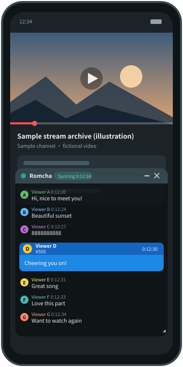
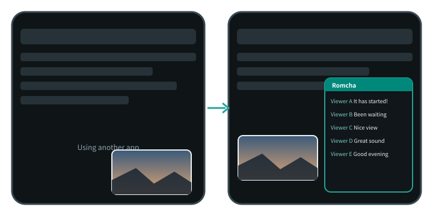
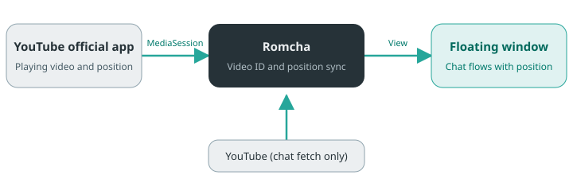

Romcha
A view-only
chat viewer
Chat disappears when you shrink YouTube's video into a small floating window, so Romcha floats the chat in a small window instead. It reads the playback position automatically and replays archived chat at the original timing.

Why I made it
Chat disappears when you shrink YouTube's video into a small window.
The YouTube official app lets you shrink a video into a small window and use other apps, but the chat (comments) is not shown in that window. I wanted to keep a video playing in a small window and still follow the chat, that is, a chat viewer that works with floating windows. That is why I made Romcha. It reads the official app's playback position and shows the chat in a separate floating window, in sync.

Features
A view-only app with no way to write, such as posting comments (ROM = Read Only Member).
-
Sync
Flows with the playback position
Follows play, pause, seek and speed of the official app, and shows archived chat at the original timing. For a video whose chat has not been generated yet, such as right after a stream ends, it says so and checks again automatically.
-
Auto-detect
Identifies the video you are watching
Finds the video being played from its title, channel name and length. You can also specify it with the official app's Share or by entering a URL.
-
Live
Works with live streams and premieres
While live or waiting, it follows the latest chat, with an adjustable display delay. After the stream ends, it switches to the synced replay.
-
Window
A small window that stays out of the way
Move, resize, change opacity, minimize, tuck it against the screen edge, or make it touch-through so you can still operate the official app underneath.
-
Display
Adjust readability
Text size, author name / icon / time, filtering by NG words and message types, light / dark theme, emoji images, and larger header buttons (36 dp / 48 dp).
-
Language
Japanese and English
Switch the display language from the settings screen (Japanese by default). The floating window changes too, without closing it.
-
Adjust
Fix the timing by hand
A manual timing offset (±10 seconds) and a manual timer for when the playback position is unavailable.
How it works
The playback position is read on your device; only the chat is fetched from YouTube.

Usage
Allow the permissions once, then just play a video in the official app.
- Open the app and follow the prompts to allow “Display over other apps”, “Notification access” and “Show notifications” (once all are allowed, the prompts collapse into one line).
- Tap “Start floating window”, then play an archive or a live stream in the YouTube official app.
- The chat flows in a small window. Drag the header to move it, and the handle at the bottom right to resize it.
- If the video cannot be identified, choose Romcha from the official app's Share, or enter a URL.
- Display, language, backup and other settings are in the gear (Settings) at the top right of the app.
Privacy and notes
No sign-in, and no advertising or analytics SDKs (only crash reports are sent).
- “Notification access” is a permission Android requires to read the playback position. Romcha does not read the content of your notifications.
- The app talks only to YouTube (chat and images), to the GitHub API when you tap “Check for updates”, and to the crash report destination (Google's Firebase Crashlytics).
- Crash reports are sent only when the app crashes. They contain the error details (stack trace), the app version, the Android version, the device model and an anonymous installation ID, and never chat content or video URLs. They are on by default, and you can turn them off any time with the “Send crash reports” switch on the settings screen.
- Identified videos are stored on the device only. Window and other settings are included in Android's automatic backup so they can be restored after a reinstall; you can turn that off with “Back up settings” on the settings screen.
This is an unofficial app and is not affiliated with YouTube or Google. It fetches chat in an undocumented way (the same requests the YouTube web app uses), so it may stop working without notice when YouTube changes. Use it at your own discretion and responsibility.
Download
Signed APKs are distributed on GitHub Releases (not on Google Play).
| Requirements | Android 14 (API 34) or later, and the YouTube official app |
|---|---|
| Tested device | Pixel 8 Pro (Android 17) |
| Price | Free (no ads) |
| License | MIT License |
| Updates | Check the latest version with “Check for updates” in the app, then install over the old one in the same way |